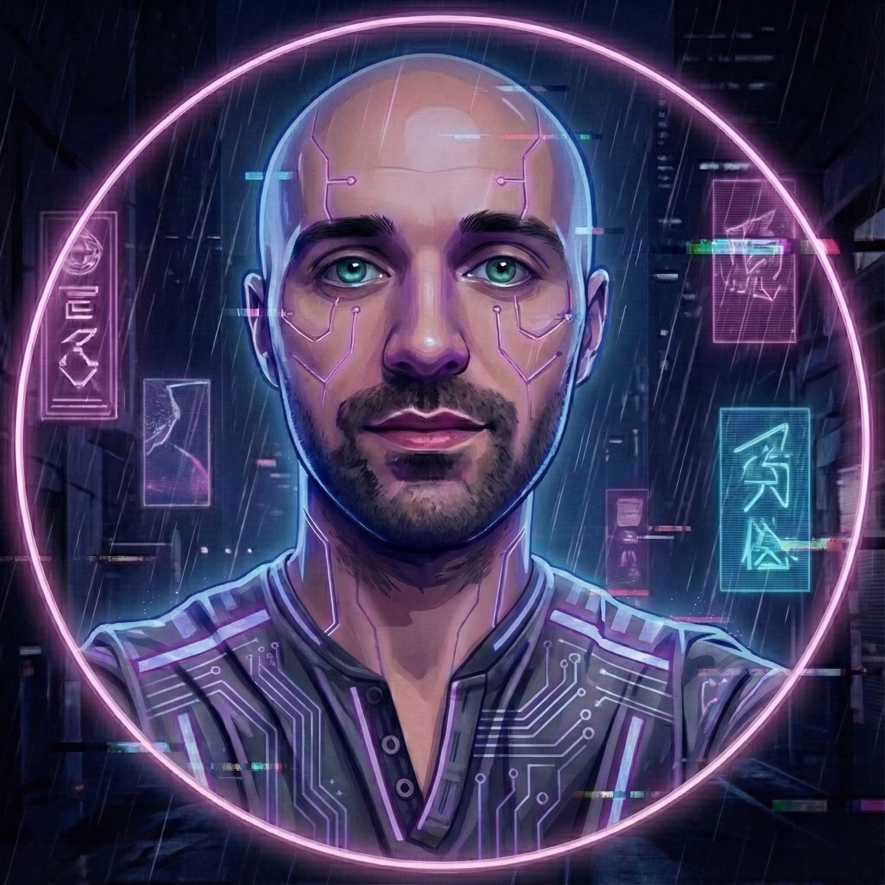
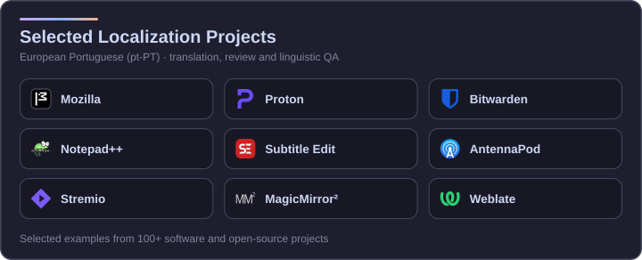

Automation & scripting
Userscripts, helpers and workflow improvements that remove repetitive work.
BlackSpirits
Developer · Open-source contributor · pt-PT translator/reviewer
I build practical tools, improve workflows and help software feel native to European Portuguese users — across automation, localization and media tooling.
Born to explore. Coded to connect.

Portuguese developer and localization contributor based in France. I work where practical software, media workflows and language quality meet.
Useful software over unnecessary complexity.
Selected work
A selection of the places where I build, maintain, automate or improve the experience.
Browser automation and UX fixes for repetitive workflows, media sites and everyday friction.
View repository →Portuguese subtitles community platform: contribution, discovery, moderation and subtitle workflows.
Visit Pipocas.tv →Metadata moderation and Portuguese data quality work for series, episodes, people and localized titles.
Visit TheTVDB →Localization & review
I translate and review software with UI context, terminology consistency, functional clarity and natural pt-PT as the priorities.
Good localization should feel as if the product were originally written for its users.

Tech & focus
Userscripts, helpers and workflow improvements that remove repetitive work.
Translation, review, terminology and linguistic QA for software and open-source projects.
Subtitles, metadata quality, cataloguing and tools around streaming and media workflows.
Practical fixes, reviews and contributions aimed at real users rather than demo-only code.
Off the clock
Contact
GitHub is the best place to explore my work. For direct contact or collaboration, email works too.